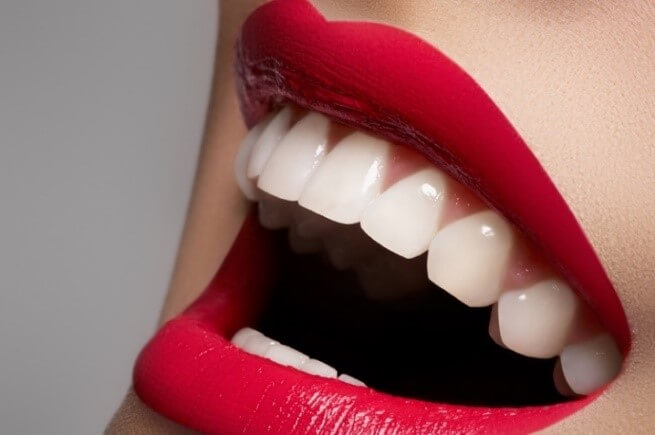

Restauraciones Estéticas: Devuelve la Belleza a tu Sonrisa con Confianza
Las restauraciones estéticas son procedimientos dentales diseñados para mejorar la apariencia y función de los dientes, proporcionando resultados naturales y duraderos. En nuestra clínica, comprendemos la importancia de una sonrisa hermosa y nos comprometemos a ofrecer tratamientos de restauración estética que restauren tu confianza y brinden resultados excepcionales.
Qué Incluye la Restauración Estética:
- Carillas Dentales: Las carillas son delgadas láminas de porcelana o resina compuesta que se adhieren a la superficie frontal de los dientes para corregir imperfecciones estéticas como manchas, decoloraciones, fracturas o irregularidades en la forma y el tamaño de los dientes.
- Blanqueamiento Dental: Este tratamiento utiliza agentes blanqueadores para eliminar manchas y decoloraciones en la superficie de los dientes, devolviendo un tono más blanco y brillante a tu sonrisa.
- Empastes Estéticos: Utilizamos materiales de relleno dentales del color del diente, como resina compuesta o cerámica, para reparar cavidades y restaurar la estética y función de los dientes dañados.
- Coronas Dentales: Las coronas son cubiertas protectoras que se colocan sobre los dientes gravemente dañados o debilitados para restaurar su forma, función y apariencia naturales.
- Implantes Dentales: Los implantes dentales son una opción de restauración permanente para reemplazar dientes perdidos, proporcionando una solución estética y funcional que se integra de manera natural con tu sonrisa.
- Recontorneado Dental: Este procedimiento consiste en dar forma a los dientes mediante el pulido o el tallado para corregir pequeñas imperfecciones o irregularidades en la forma y alineación de los dientes, creando una sonrisa más armoniosa y estética.
En nuestra clínica, nos esforzamos por brindar resultados estéticos excepcionales que mejoren tu sonrisa y tu confianza en ti mismo. Nuestro equipo de profesionales altamente capacitados está dedicado a proporcionar un cuidado personalizado y de alta calidad para asegurar que alcances tus metas estéticas dentales de manera segura y efectiva. ¡No permitas que las imperfecciones dentales te frenen! Contáctanos hoy mismo para explorar tus opciones de restauración estética y comenzar tu viaje hacia una sonrisa más hermosa y segura.
